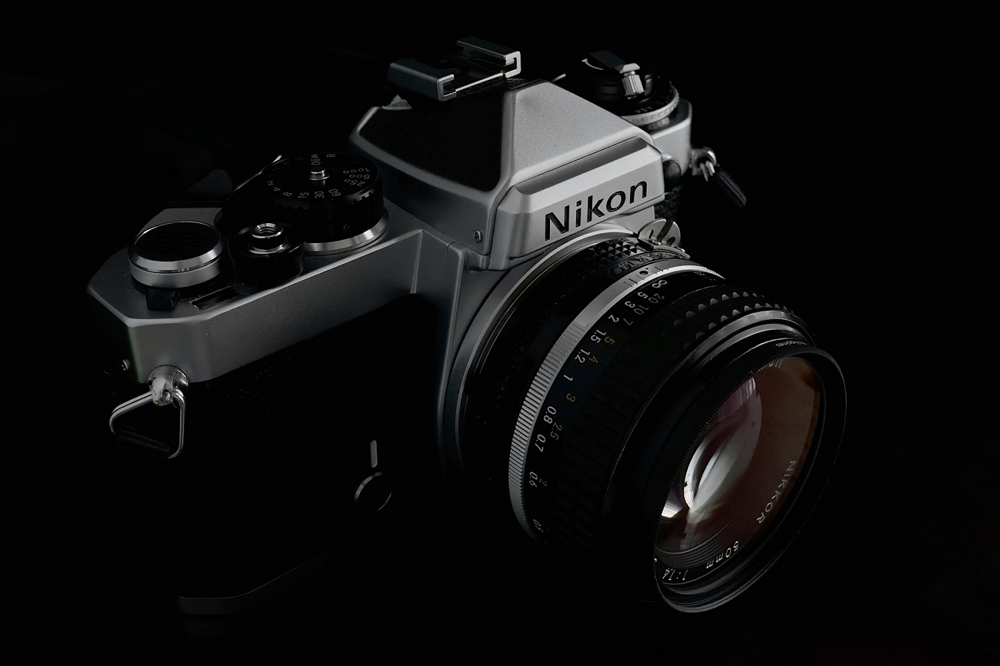
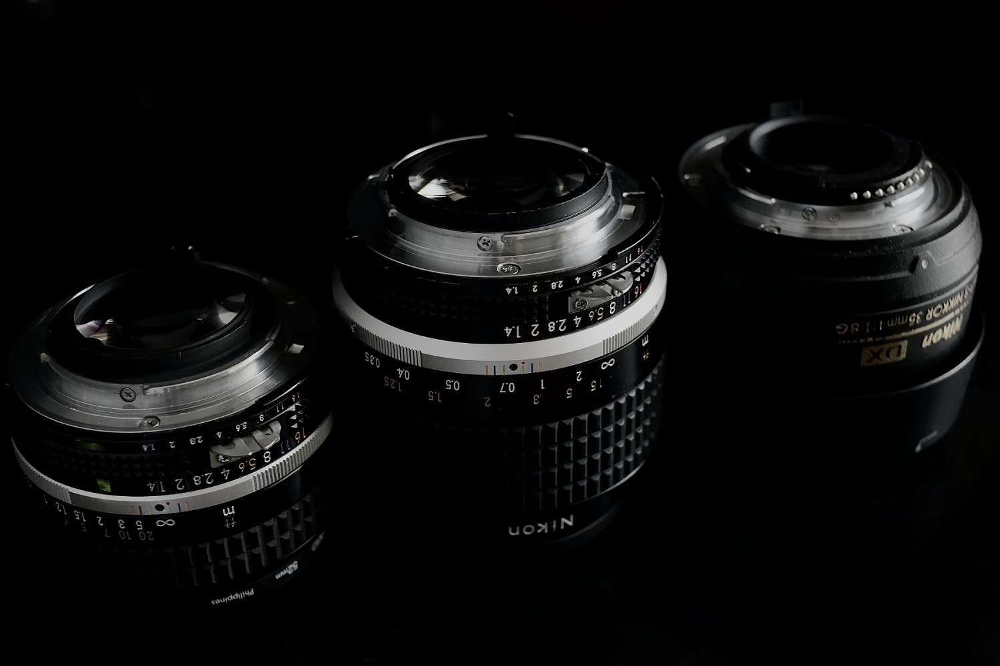

 A 1978 Nikon FE with a small dent in the pentaprism (which wasn't my doing). I love this camera very much and would never replace it with anything other than another Nikon FE or a possibly a Nikon F3. I usually pair it with my Nikkor 50mm f1.4 AI-S (pictured) or my Nikkor 35mm f1.4 AI-S.
 Left to right: Nikkor 28mm f2.8 AI, Nikkor 35mm f1.4 AI-S, Nikkor 35mm f1.8G DX
Nikon F Mount:
- Nikkor 35mm f1.8G DX (This lens is on my DSLR 90% of the time.)
- Nikkor 50mm f1.8G FX
- Tamron 70-200mm f2.8 Di LD (IF) Macro
- Sigma 10-20mm f4.5-5.6 EX DC HSM
- Nikkor 50mm f1.4 AI-S
- H-Nikkor 50mm f2
- Nikkor 35mm f1.4 AI-S (This lens is on my Nikon FE 90% of the time.)
- Nikkor 28mm f2.8 AI
- Sigma Zoom-K 70-210mm f4.5-5.6
For other camera mounts:
- Helios 44M 58mm f2
- Olympus Zuiko OM Auto-S 50mm f1.8
- Pentax Takumar 50mm f1.8
© Trevor Li 2019 - 2020, all rights reserved. All images taken by Trevor Li unless noted.